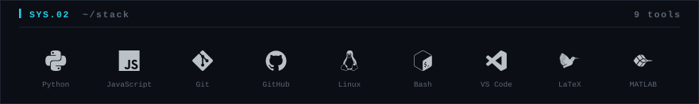
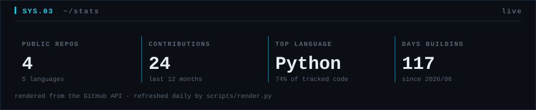
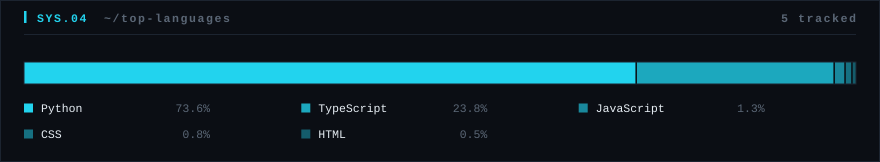
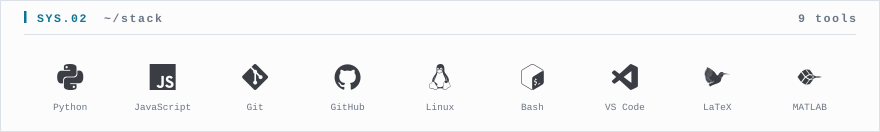
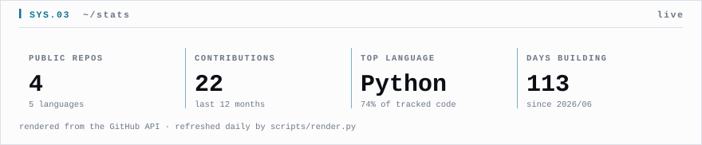
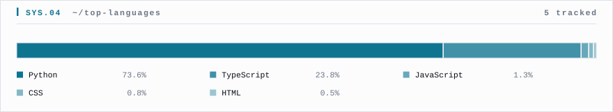

每张 SVG 同时放在 GitHub 深色（#0d1117）和浅色（#ffffff）底色上，
内容宽度按 GitHub README 实际栏宽。preview.html 只看**图形资产**，
正文 markdown 不在这里重复（GitHub 渲染它是可预测的，而这些 SVG 的对比度和对齐是手调的，
必须用眼睛验收）。改图后重跑 scripts/make_hero.py /
make_stack.py / render.py 再刷新本页。
hero-dark.svg

stack-dark.svg

stats-dark.svg

langs-dark.svg

hero-light.svg

stack-light.svg

stats-light.svg

langs-light.svg
